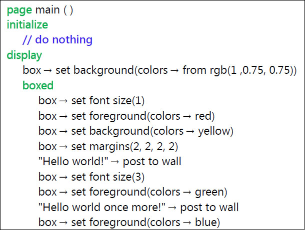
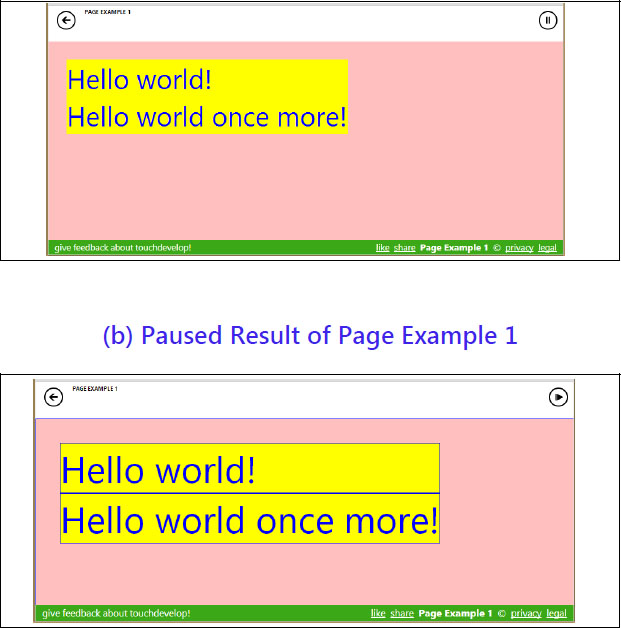
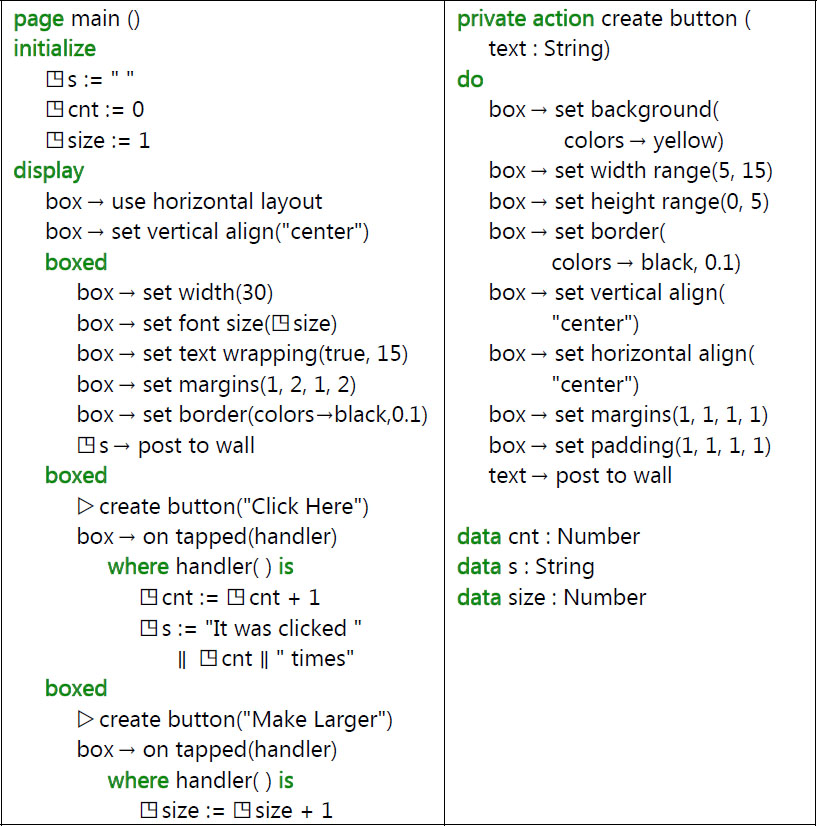
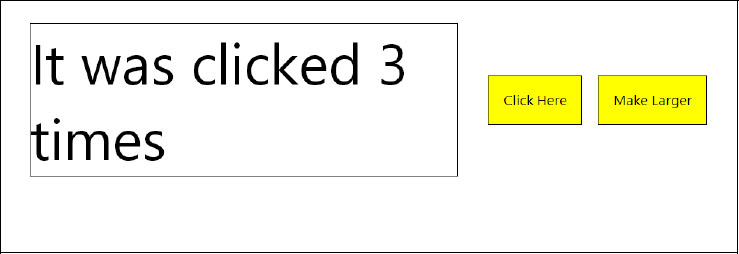
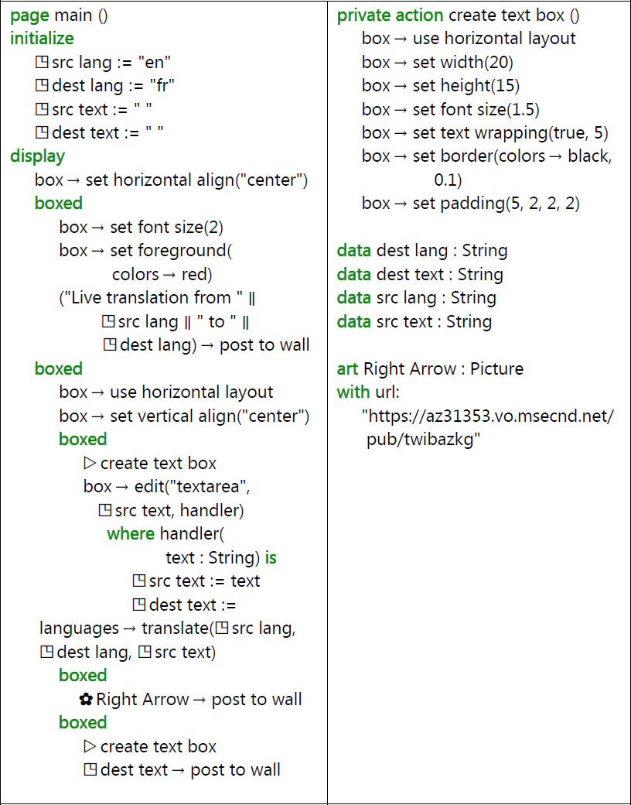
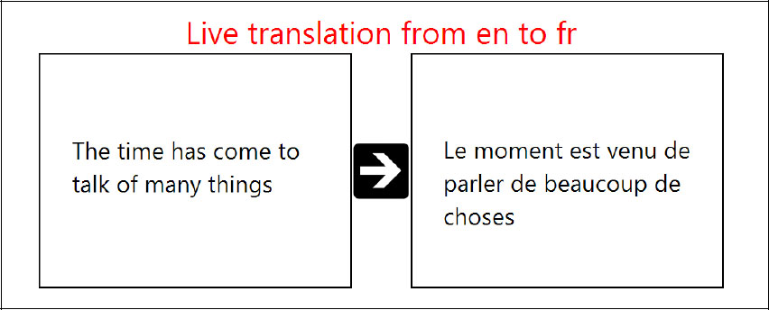
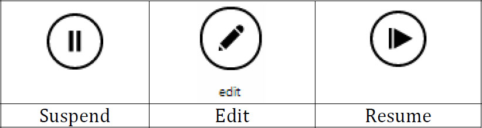

A well-designed user interface that takes full advantage of the screen is essential for giving a professional look and feel to a program. The page and boxed constructs in TouchDevelop provide a powerful means of laying out information on the screen. A unique feature to assist script developers is that a running script can be suspended while the format of information currently displayed on the screen is changed, and then the script’s execution can be resumed.
10.1 Page Overview
A page is invoked in a similar manner to an action. However, when it is invoked, it takes over the whole screen. Everything displayed on the screen is created by the code belonging to that screen (or by actions invoked by the page).
Pages are managed in a stack-like manner. When the code in page A causes page B to be displayed, B takes over the screen. However, when B is finished or when the user taps the back button, the screen reverts to show what had been displayed by A just before B. Similarly, page B could have caused page C to be displayed, and when C is finished, the screen returns to show page B again.
The code for a page is divided into two main parts: an initialize section and a display section. When the page is invoked, the screen is cleared to be blank and then the code in the initialize section is executed. This code can execute all kinds of statements in the scripting language except that it cannot display anything on the screen. If it attempts to change anything on this blank screen, the script stops execution with an error report. The purpose of the initialize section is to initialize global variables, especially global variables which will be used in the display section of the page.
The display section of a page is responsible for rendering the images and text on the screen. The box construct, explained below, is used to manage the placement of information on the screen. There is a major restriction on what the code in the display section is allowed to do. The display section cannot make assignments to any global variables. If the code in the display section attempts to execute such an assignment, or calls an action which attempts such an assignment, the script stops execution with an error report.
The restrictions on the contents of the initialize section and display section impose a certain style of programming on the script developer. However these restrictions also provide a significant benefit. They permit the script’s developer to modify the layout and contents of the screen while the script execution is suspended and then resume execution with the new screen layout in effect. A developer can therefore correct and/or improve the script’s user interface without having to stop and restart the script from the beginning.
10.2 Box Overview
The display section of a page is responsible for rendering visual elements on the screen. Within that screen area, any value which can be displayed on the wall can be displayed here too.
There is, however, a special feature available for use only within the display section of a page. The new feature is called a box, and it is introduced in a script with the keyword boxed. Any collection of graphical elements can be boxed, which means that the collection can be treated as a single unit known as a box. That box becomes a graphical element in its own right.
A box represents a rectangular region of the screen. The size of the rectangle will normally default to whatever is needed to enclose its contents. Alternatively, either or both dimensions can be specified or constrained to be within desired ranges. Scroll bars can be added to a box if desired.
An important part of a graphical user interface is the ability to input information. Code can be attached to a box which is executed when the box is tapped (or clicked with a mouse). A box containing text can be marked as editable, and code can be attached to that box which is executed whenever the text contents are changed. The attached code must take the form of a change handler. For a click event, the change handler is a parameterless action. For the action of changing text, it is an action which takes a single String parameter; that string is a copy of the new text.
10.3 Examples of Boxes and Pages
A page can be displayed either by making it into the first action executed when the script is started, or by using a push statement. The first of these choices is automatic if you select the script template named pages when starting to create the script. The first example discussed here was created in this way.
10.3.1 Page Example 1 (/bvhugenw)
Figure 10-1 is very similar to the scripts template. However some changes have been made to illustrate a couple of important points.
The boxed keyword creates a new box. It is a container box, because it is intended to hold graphical elements drawn on the screen. The contents and the formatting of that box are specified by the indented code underneath. In this example, two lines of text are written to the wall, which means that they are written as the contents of the box. After the script is run, the screen has the contents shown in Figure 10-2(a).
The lines of text are written one below the other and are left-justified within the box. A vertical layout of graphical elements with left justification is the default. Both of these defaults can be overridden.

Figure 10-1
Page Example 1 (/bvhugenw)
The surprise of the example is that the sizes and colors of the two lines of text are exactly the same. The reason is that the graphical elements defined inside the box, which are the two textual strings in this example, are not rendered until all the statements inside the box have been executed. It is only the last change to the foreground color and the last change to the font size which has any effect.
The two lines of text are themselves boxes, but they are known as leaf boxes because they do not contain any boxes at a lower level. It is possible to see the extents of all the boxes on the screen by tapping the pause button in the top right-hand corner of the screen. Figure 10-2(b) shows the browser window after pausing the script. Thin blue lines surround the two lines of text separately. The two leaf boxes taken together comprise the entire contents of the container box, and correspond to the code inside the boxed construct. That is why the background color of box boxes is yellow. The pink region surrounding the container box corresponds to the entire page – it is the frame within which the boxes have been drawn. The statement box → set margins(2, 2, 2, 2) affects the placement of the container box inside that enclosing frame.
As the code of Page Example 1 shows, it is possible to specify some kinds of formatting for the frame by using the box variable immediately inside the display section of the code.
Leaf boxes are created in various ways which include posting text on the wall, or posting images from the art section of the script onto the wall. The formatting of text in a leaf box is inherited from its enclosing container box.

Figure 10-2
(a) Result from Page Example 1
10.3.2 Page Example 2 (/hnimxaiw)
The second example introduces events which are executed when a box is clicked and demonstrates the need for the initialize section in a page (Figure 10-3).
The display section of the page defines three boxes. Because the display section makes the method call box → use horizontal layout, the three boxes are drawn from left to right across the screen. Furthermore, the boxes are vertically aligned so that their middle points are in a straight line.
The first box contains text copied from the global variable s, and draws it with a font whose size is specified by the global variable, size. The code also sets attributes of the box so that the text will wrap onto multiple lines if it does not fit, and solid lines are drawn around the box.
The second and third boxes are both intended to be clickable. They are drawn to have the same size and use the same colors. Therefore, rather than duplicating the code for the two boxes, the code to set each box’s attributes has been defined inside the action named create button. Whenever the identifier box is used inside that action, it refers to the current box which is being defined.
After calling the create button action for each box, the on tapped method is invoked to attach a change handler to the box. For a tapping action, the change handler takes the form of an action with no parameters, and that action has to be defined at this point in the script using a where clause.
The code inside a change handler can do anything allowed in a TouchDevelop script except assign values to local variables, change any attributes of the current box or directly change what is being displayed. If the action of tapping the box is to have any effect on the current page, the change handler must communicate the changes via global variables.
The change handler for the box which displays the text “Click Here” increments a global variable named cnt and then uses the new value of cnt to construct a string value stored in the global variable s. It should be noted that s was used to provide the contents displayed inside the first box drawn on the page.
Along similar lines, the change handler for the box which displays the text “Make Larger” increments a global variable which specifies the font size used for text displayed in the first box on the page.
When the script is run, the first box is initially empty. However, when the “Click Here” box is tapped, the first box changes to display the string “It was clicked 1 times”. Each subsequent tapping action changes that 1 to 2, then to 3 and so on. The change to the box contents on the screen occurs because the entire page is redrawn any time something happens which may affect the page. The reasons for redrawing the page include:
- executing a change handler on the page,
- clicking the suspend button at the top right of the screen and then resuming the script,
- displaying another page and then returning to this page,
- any global variables or records have been modified.

Figure 10-3
Page Example 2 (/hnimxaiw)
The screen after tapping the “Click Here” and “Make Larger” buttons a few times each is shown in Figure 10-4. Note that the text wrapping attribute of the first box was set, and when the font size was increased, the string wrapped onto two lines of text. No height was specified for the box, so it simply grows taller to accommodate the two lines of text.

Figure 10-4
Result of Running Page Example 2
10.3.3 Page Example 3 (/wrsonnwh)
The third example script shows the use of a change handler to process editable text and the nesting of boxes to achieve a desired layout for the graphical elements.
The script shown in Figure 10-5 allows the user to enter English language text into the left-hand box. Every time the user pauses, the change handler is invoked. Its input parameter is a copy of the current version of the text. That input parameter is normally assigned, unchanged, to the global variable associated with this box. (The editor ensures that there is always such a variable and it will have the String type.) However additional actions can be added to the change handler. In this example, that additional action is to invoke the Bing language translation service and translate the English language input into French, The French version of the text is displayed in the right-hand box.
A snapshot of the screen after the script has been used to translate one sentence is shown in Figure 10-6.

Figure 10-5
Page Example 3 (/wrsonnwh)
A production version of this script might allow the user to select both the source language and the destination language for the translation. This nicer version of the script would presumably use the full names of the languages rather than two letter abbreviations. It would likely also perform the translation only when the user clicks on the arrow between the two boxes. It can be disconcerting to have partial translations popping up and changing as one is typing text into the left-hand box. Also, an internet connection is made every time the text is translated and this can be undesirable for a tablet device communicating via a cellphone connection. These enhancements are left as an exercise for the reader.

Figure 10-6
Translation produced by Page Example 3
10.4 Working with Pages
The display section of a page works with the entire window of the browser running the script. This window is effectively the current box for any code executed immediately inside the display section; that is, code which is not nested inside a boxed construct.
10.4.1 Entering and Leaving a Page
A page is simply a special kind of action. It can be invoked as an entry point of the script if it is public and does not have any parameters. It can also be invoked as though it were an action. If, for example, the script defines a page named show then the page can be displayed by executing the call ▷ show. When code for the script is displayed on the screen, the call statement appears as push ▷ show to indicate that the TouchDevelop run-time is maintaining a stack of pages.
A page which is not used as the entry point of a script can accept input parameters. It cannot have any output parameters.
A page can be exited (terminated) by clicking the back arrow which appears in the top left corner of the webpage. On a Windows phone, the back button achieves the same effect. The page can also be exited by executing the statement wall → pop page. This statement would normally be used inside a change handler. An example appears below.
boxed
“Click here when done” → post to wall
box → on tapped(handler)
where handler( )
is
wall → pop page
10.4.2 Coding Restrictions
The initialization section of a page cannot draw any items on the page. It can declare and use local variables but these variables are not accessible from inside the display section of the page. (They are out of scope.) Normally, the initialization section is used to initialize global variables used in the display section.
The display section of a page can use but not assign to global variables. (Even though change handlers are defined within the display section, they are not considered to be part of the display section.) The display section can use local variables as normal. It can use normal control structures such as loops and if-statements. Its main purpose is to render graphical elements on the current page.
Change handlers attached to boxes on the current page can use and assign to global variables. They can use but they cannot assign to local variables in the display section of the page, provided that they are visible. (Normal scope rules apply.) They cannot draw any items on the screen nor can they set any attributes of the current box.
All the statements in the display section of the page are re-executed and the entire page is re-drawn after control returns from a change handler or when the page becomes the current page again after another page exits or when a global variable or record is changed. In contrast, the code in the initialization section is only executed when a new instance of the page is created and pushed onto the stack of pages.
The identifier box refers to the current box and can be used in any context where there is an active current box. If box is referenced inside an action, then there may or may not be a current box depending on how control reached that action. A run-time error occurs if there is no current box. There is always a current box if control is inside the display section of a page or inside an action called from a page or inside a change handler attached to a box. There is no current box when the initialization section of a page is being executed.
Even though there may be a current box, access may be limited to read only (such as obtaining the current value of box→pixels per em). Invoking a method which sets attributes of the current box is permitted only within the display section of a page or within an action invoked from the display section.
10.5 Live Editing of the User Interface
Pages are easy to debug and modify while a script is executing. There is no need to stop the script and re-start it from the beginning each time that the script developer makes a small change. When the script is running in a browser, a pause button is displayed in the top right corner of the browser’s window. The pause button is shown in Figure 10-7.

Figure 10-7
Icons for User Interface Editing
Tapping that button causes a very thin blue line to be drawn around each box which is currently displayed on the screen, and the pause button is replaced with a resume button, also shown in Figure 10-7.
The script is no longer running at this point. Clicking inside one of the rectangles composed of thin blue lines causes the rectangle to be augmented with a thicker dotted red rectangle, and causes a button labeled as ‘edit’ to appear on the screen. The edit button is shown in Figure 10-7. That dotted red rectangle indicates which box has been selected. Double clicking causes an outer enclosing box to be selected instead. Triple clicking, etc., works similarly when the boxed constructs are nested sufficiently deeply.
Clicking the edit button causes the script editor to be invoked on exactly the code for the selected box. On a display monitor which is wide enough, the browser’s window is split so that the left-hand side contains the currently displayed page and the right-hand side shows the code for the selected box. (If the view of the page takes up too much screen real estate, it can be removed by clicking the dismiss button in its top left corner.)
The code for the script can now be edited. Changes can be small or they can be major. There is no restriction on which code in the entire script can be changed. When the changes are complete and it is time to see if they had the desired effect, the view of the current page should be dismissed (if that has not been done already) and the resume button, which is now on the left-hand side of the screen, can be tapped.
Resuming the script causes the display section of the current page to be re-executed and the page is re-drawn, reflecting any changes made to the code. The run-suspend-edit-resume cycle can be repeated as many times as desired until the user interface is perfect.
It should be noted that if major changes to the code are made, such as changes to actions called from other places in the script, then the script may need to be restarted from the beginning to see their full effect.
10.6 API Support for Boxes and Pages
The box identifier names a service which has the Box datatype. There is only one instance of this type, it is a singleton.
The boxed and page constructs in TouchDevelop are recent additions to the scripting language and are still being developed. Table 10-1, Table 10-2 and Table 10-3 list the methods provided for the box service at the time of writing. However additional methods may be provided and/or some of the current methods may be modified to work differently. The most reliable and up-to-date source of information about these constructs is the TouchDevelop website.
Table 10-1
General Methods of box Service
Method | Description |
|---|---|
set background(c : Color)
| Sets the background color |
set foreground(c : Color)
| Sets the color of items drawn in the box |
set height(h : Number)
| Sets an exact height for the box |
set height range(min : Number, max : Number)
| Sets a range of heights for the box |
set width(w : Number)
| Sets an exact width for the box |
set width range(min : Number, max : Number)
| Sets a range of widths for the box |
set border(c : Color, w : Number)
| Sets the color and width of a line drawn around the edge of the box |
set horizontal stretch(f: Number)
| Controls how box width is computed: f = 0.0 means shrink to fit content, f = 1.0 means expand to fill the frame, f = 0.5 means expand to 50% of frame’s width. |
set padding(t: Number, r: Number, b: Number, l: Number)
| Specify how much space to leave around the box: t, r, b and l determine the top, right, bottom and left sides respectively. |
on tapped(handler: Action)
| Associates a handler action with the box, and is invoked when the box is tapped |
Table 10-2
Text Handling Methods of box Service
Method | Description |
|---|---|
set font size(n : Number)
| Sets the font size for text displayed in the box; 1.0 is the current default size. |
set text wrapping(wrap: Boolean, min: Number)
| Specifies whether long text lines should be broken, and what length is too short to be split |
set horizontal align(s: String)
| Specifies how to format text in the box; the argument is one of “left”, “right”, “center” or “justify” |
pixels per em
| Returns the width of the letter ‘m’ in pixels |
edit(style: String, v: String, changehandler: Action)
| Displays text from the global variable v which can be edited. The style parameter is one of “textline” “textarea” “number” or “password”. The changehandler is invoked each time the text is changed. |
Table 10-3
Layout Methods of box Service
Method | Description |
|---|---|
use horizontal layout
| Arranges boxes and other items from left to right horizontally |
use vertical layout
| Arranges boxes and other items from top to bottom vertically |
use overlay layout
| Arrange boxes and other displayed items inside this box as layers drawn on top of each other |
set horizontal align(s: String)
| s is one of “left” “right” “center” and “justify” to indicate how text and other items in the box are arranged |
set vertical align(s: String)
| s is one of “top” “bottom” “center” and “baseline” (for text) to indicate how text and other items in the box are arranged vertically |